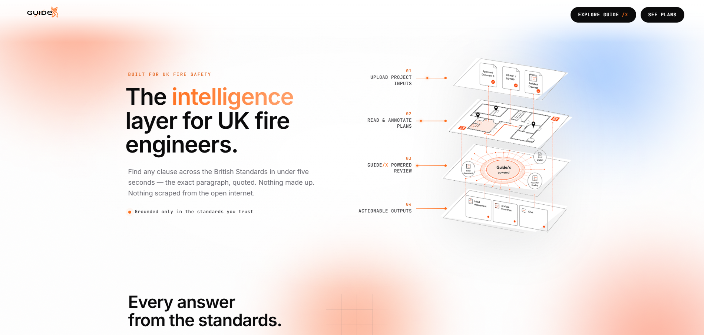
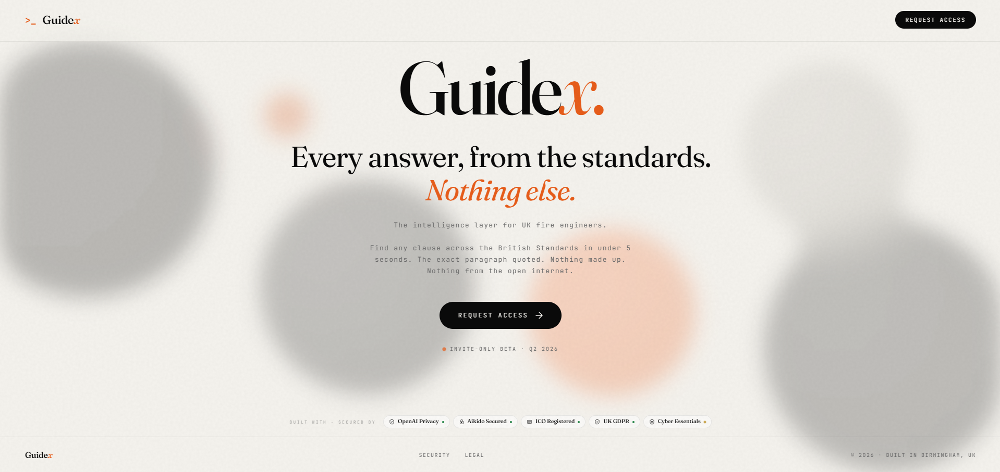
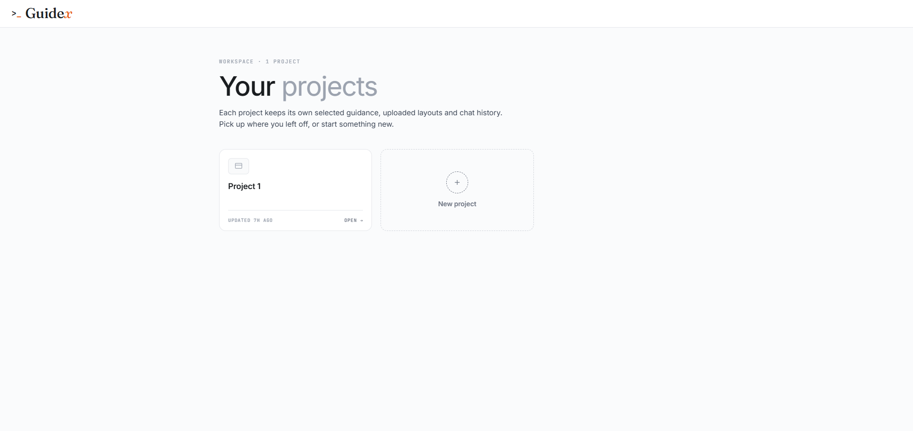
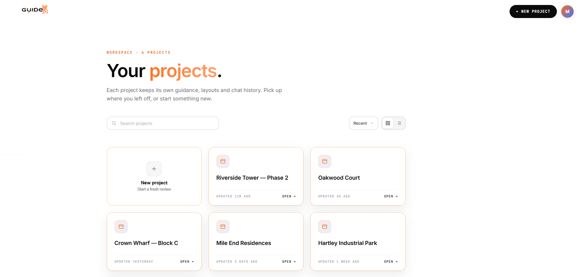
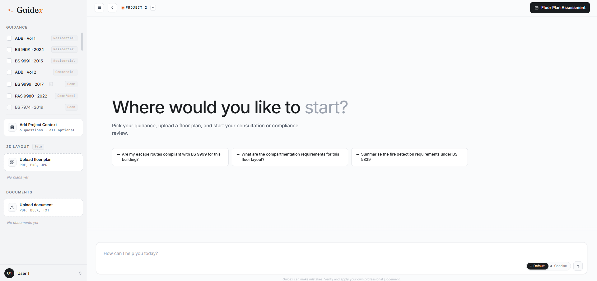
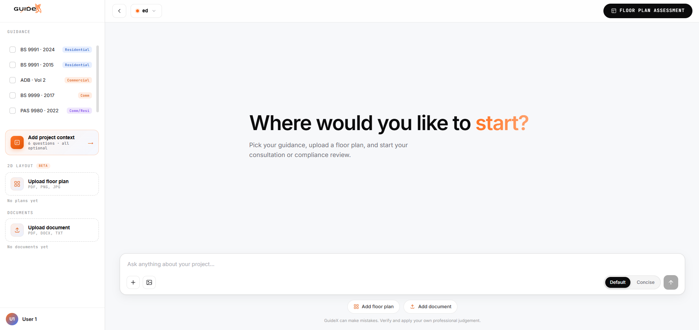
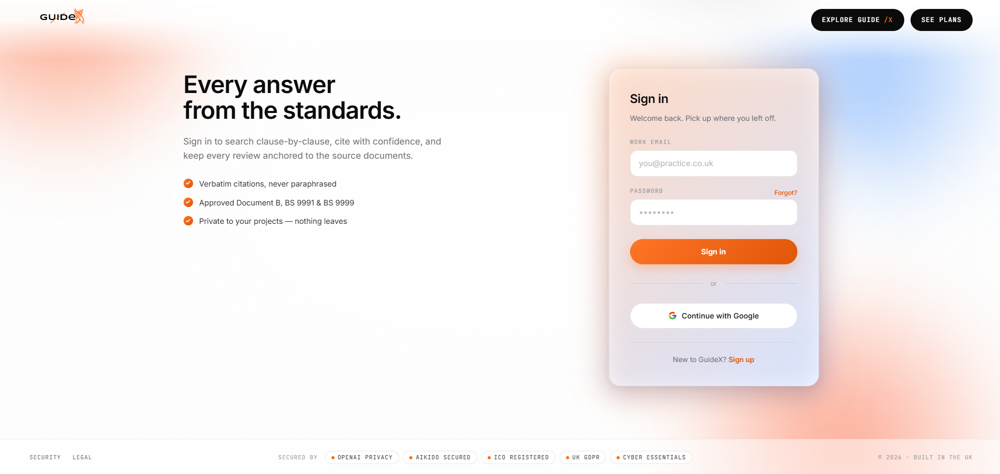
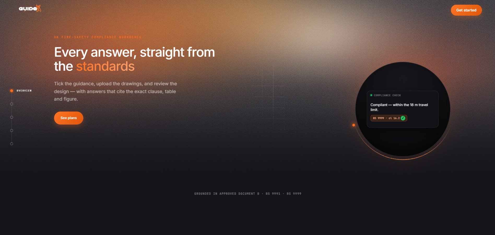

Redesigning the intelligence layer for UK fire engineers — turning a soft, editorial landing page into a precise product people can trust with compliance decisions.

Guide/X answers any clause across the British Standards in seconds — the exact paragraph, quoted, with nothing scraped from the open internet. The engine was strong. The product around it didn’t say so.
The original site leaned editorial — a big decorative serif and soft background blobs that read like a design blog, not a precision instrument fire engineers would stake a compliance decision on. I was hired to redesign it: make the product look as rigorous as the work it supports, across the marketing site and the core app.
The landing felt soft and editorial — nothing signalled precision, speed or trust, which is the entire value.
Decorative serif and blurred shapes buried the real offer: cited, verbatim answers from the standards.
The app (projects, chat) worked but felt utilitarian — flat hierarchy, low confidence for high-stakes work.
Before designing anything new, I rebuilt and audited the existing product end to end — landing page, projects workspace and consultation screen — to see exactly where the experience under-sold a genuinely powerful tool.

A literary serif and pastel haze said “magazine,” while the copy promised legal-grade, cited answers. The two pulled in opposite directions.
Verbatim citation — the feature that earns an engineer’s trust — was buried in a paragraph instead of being the hero.
Projects and chat were functional but bare: a single project, weak hierarchy, and little to make a careful professional feel held.
Guide/X serves UK fire-safety professionals who work against named standards — BS 9991, BS 9999, ADB, PAS 9980, BS 5839. Every answer they give can carry safety and legal weight, so I grounded the redesign in how they actually decide who to trust.
An engineer won’t act on an answer that merely “sounds right.” It has to quote the clause and name the document — visibly, every time.
Hunting through hundreds of PDF pages is the daily pain. The promise — the right clause in seconds — had to feel fast and certain.
Each building is its own world of guidance, layouts and history — and none of it should ever leak to the open internet.
“With a tool like this, I need to see the clause — not take its word for it.”
— Design principle, drawn from the audienceThe same engine serves a few related professionals — each arriving with a different question, but the same need for a cited, defensible answer.
The product moves a fire engineer from a focused landing page to their actual work in a few clear steps, with deeper product info a click away in the nav for anyone still deciding.
The redesign rebuilt each core screen around one idea: the interface should feel as exact as the answers. Here’s the same three screens, before and after.
Landing. The decorative serif and pastel blobs give way to a confident grotesque headline, a single hot-orange accent, and an isometric diagram that shows the actual flow — inputs in, cited answers out. The promise leads instead of hiding.


Projects. A near-empty “1 project” state becomes a real workspace — a searchable, sortable grid of buildings with clear timestamps and states, so a consultant can run many jobs without losing the thread.


Consultation. The chat is reframed around a clear start — pick guidance, add project context, upload a floor plan — with a calmer canvas, stronger labels, and the 2D layout & document tools surfaced where they’re needed.
A clean, neutral sans system — Inter for confident headlines and Roboto for body and interface — so the product reads as exact and modern. Generous white space and a single accent do the rest.
Every surface points back to a cited, verbatim clause — the citation is the hero, not a footnote.
Quiet canvases, one accent colour, strong hierarchy — so a careful professional always feels in control.
Workspaces, guidance pickers and uploads designed around real fire-safety workflows, not a generic chatbot.
The hero leads with the real promise — verbatim, cited answers — backed by an isometric diagram of inputs to outputs.
A searchable grid where each building keeps its own guidance, layouts and chat history — pick up exactly where you left off.
A clear “where would you like to start?” flow with guidance selection, project context and floor-plan upload built in.
A dark, distraction-free view that puts a single cited answer centre stage for deep, careful reading.


The redesign reframes Guide/X from a nice-looking idea into a tool that looks as rigorous as the work it supports. The new direction is now in production — the marketing site is live, and the app screens are rolling out as the product matures.
For high-trust work, the interface itself has to feel exact. Visual confidence is a feature.
Citations were the most persuasive thing Guide/X had — so I made them the centre, not a caption.
A redesign isn’t just the landing page — the day-to-day app is where trust is kept or lost.
Redesigning a live product taught me to respect what already works, find the one idea worth amplifying, and carry it consistently from the first scroll of the marketing site to the last detail of the workspace.